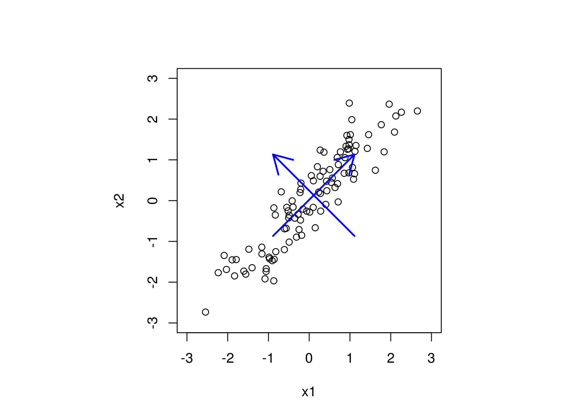

1 Analiza glavnih komponenti (PCA)
Kod višestruke regresije u opštem slučaju prediktori su korelisani. Analiza glavnih komponenti (Principal Component Analysis) koristi se kao alat u ispitivanju podataka i pri pravljenju modela; u pretprocesiranju, ispitivanju skupa opservacija i skupa prediktora. Ovom statističkom procedurom se, korišćenjem linearnih transformacija, početni skup prediktora transformiše u novi skup nekorelisanih prediktora. Pritom se identifikuju oni prediktori koji su najbitniji za podatke, koji opisuju najviše varijabilnosti, i oni koji nisu toliko bitni. Te nebitne prediktore onda možemo izbaciti i sprovesti linearnu regresiju sa transformisanim prediktorima i sa manje njih. Na taj način se PCA koristi za smanjivanje dimenzionalnosti i povećanje interpretabilnosti.
(Uvod kopiran sa odlične prezentacije Anice Kostić (link), koju valja pogledati za detaljniji pregled PCA)
1.1 Ideja i postupak
Pretpostavimo da imamo sledeći skup podataka (samo prediktori).
# Generisemo neke podatke
set.seed(216)
x1 <- rnorm(100)
x2 <- x1 + rnorm(100, sd = 0.5)
# Vidimo da je najveca varijabilnost podataka duz prave y = x
par(pty="s") # hocemo kvadratni grafik
plot(x1, x2, xlim = c(-3, 3), ylim = c(-3, 3))
arrows(c(mean(x1) - 1, mean(x1) + 1), c(mean(x2) - 1, mean(x2) - 1),
c(mean(x1) + 1, mean(x1) - 1), c(mean(x2) + 1, mean(x2) + 1),
col="blue", lwd = 2)
Strelicama su označeni pravci najveće varijabilnosti u podacima.
Analiza glavnih komponenti se vrši nad standardizovanim podacima, pa pretpostavljamo da je \(X\) ovde matrica standardizovanih prediktora.
Osnovna ideja je da se rotira ovaj skup prediktora tako da se pravci najvece varijabilnosti nalaze na osama i da prediktori postanu ortogonalni. Rotacija se dobija množenjem matricom, pa uzimamo nov skup prediktora \(Z = XU\), gde treba odrediti \(U\) tako da prediktori \(Z\) budu ortogonalni, tj. da je \(Z^\top Z\) dijagonalna.
Matrica \(X\top X\) je simetrična, pa se može dijagonalizovati, odnosno postoji ortogonalna matrica \(M\) (sačinjena od sopstvenih vektora matrice \(X\top X\)), takva da je \(X\top X = MDM^\top\), gde je \(D=diag\{\lambda_1, \dots, \lambda_p\}\) dijagonalna matrica sa sopstvenim vrednostima matrice \(X\top X\) na dijagonali.
Odatle, ako uzmemo da je \(U=M\), tj. \(Z = XM\), imamo \[Z\top Z = M\top X\top XM=M\top MDM^\top M = D,\] jer je \(M\) ortogonalna. Dakle, ako je \(U\) matrica čije su kolone sopstveni vektori matrice \(X\top X\), transformisani prediktori \(Z=XU\) će biti ortogonalni.
Time dobijamo postupak analize glavnih komponenti:
- Standardizujemo prediktore i uzmemo matricu standardizovanih prediktora \(X\)
- Odredimo sopstvene vektore matrice \(X\top X\)
- Napravimo matricu \(U\) čije su kolone sopstveni vektori matrice \(X\top X\)
- Uzmemo nov sistem prediktora \(Z=XU\)
- Glavne komponente su kolone matrice \(Z\)
1.2 Smanjivanje dimenzije
Jedna od najbitnijih upotreba za PCA je smanjivanje dimenzije. Naime, ako imamo mnogo prediktora, korisno je smanjiti broj prediktora sa kojima se radi analiza, radi interpretabilnosti. Medjutim, nekad se ne mogu prosto izbaciti prediktori iz modela, već neke linearne kombinacije istih utiču na model. Analiza glavnih komponenti teži da nadje ove linearne kombinacije prediktora iz \(X\) koje najviše doprinose varijabilnosti podataka.
Često se nakon analize glavnih komponenti koristi prvih nekoliko glavnih komponenti, čime se smanjuje broj korišćenih prediktora za modelovanje. Neko okvirno pravilo je da se uzme onoliko komponenti koje objašnjavaju više od 80% varijabilnosti u podacima, što se meri veličinom sopstvenih vrednosti (prve glavne komponente odgovaraju najvećim sopstvenim vrednostima).
Takodje, nekad je moguće na osnovu razmatranja matrice rotacije \(U\) odrediti tačno koje linearne kombinacije prediktora su bitne. Na primer, ako je matrica rotacije približno \(U=\begin{pmatrix}1 & 0 \\ -1 & 0\end{pmatrix}\), to znači da je prva glavna komponenta \(X_1 - X_2\), pa ako je udeo varijabilnosti objašnjen prvom glavnom komponentom veoma veliki, dobar model bi mogao da koristi samo jedan prediktor, i to \(X_1 - X_2\), čime smo modelovanje sveli na prostu regresiju.
Neke napomene
Analiza glavnih komponenti ne uzima u obzir zavisnu promenljivu, već se bavim samo transformacijama prostora prediktora.
Izuzetno je bitno standardizovati podatke pre analize glavnih komponenti. Ako se podaci ne standardizuju, problem koji se može javiti je da prediktor koji uzima vrednosti u intervalu [-100, 100] izgleda da doprinosi varijabilnosti mnogo više nego neki koji je na [-0.1, 0.1], iako su ravnopravni kad se skaliraju.
Vrlo slikovito objašnjenje analize glavnih komponenti se može videti na sajtu Cross Validated